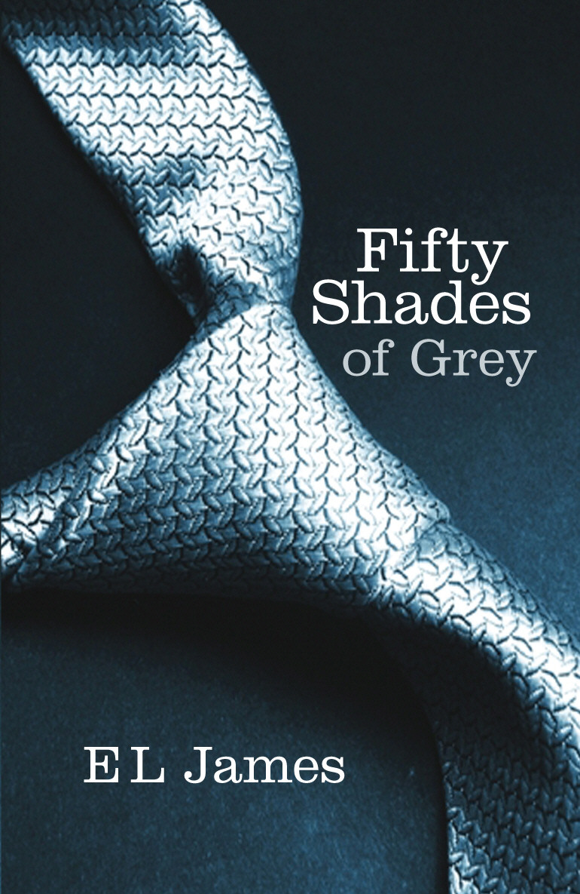

Fifty Shades of Grey

Író: E.L. James Kiadás: 2011
E.L. James által írt 'Fifty Shades of Grey' (2011) egy szenvedélyes és kontroverz romantikus regény, mely a fiatal irodalmi szerkesztő, Anastasia Steele és a gazdag üzletember, Christian Grey közötti erotikus és összetett kapcsolatot mutatja be. A mű jelentős vitákat keltett, miközben a BDSM-témájú romantikus irodalom egyik kiemelkedő példája lett.
E.L. James

Foglalkozása: E.L. James Született: 1963
Élet és Munka: Erika Leonard James, ismertebb írói nevén E.L. James, brit írónő, aki világhírűvé vált a "Fifty Shades of Grey" trilógiával.
Híres Művei: James a "Fifty Shades of Grey," "Fifty Shades Darker" és "Fifty Shades Freed" regények szerzője, amelyek a romantikus és erotikus műfajban váltak rendkívül sikeresekké.